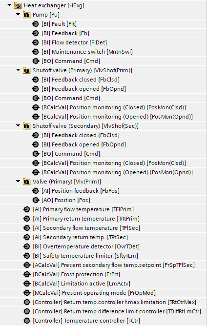
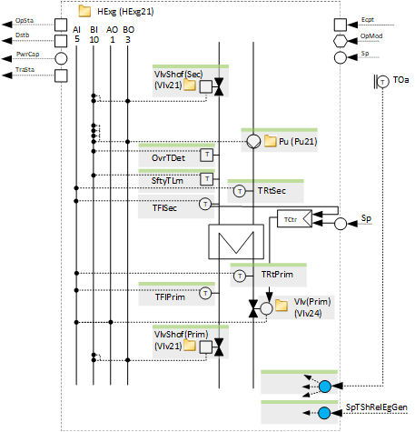
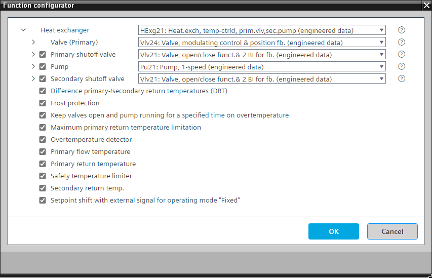

[HExg21] 热交换器，温度控制，带主阀和辅助泵
Program block, name / node subtype: [HExg21] Heat exchanger, temperature-controlled, with primary valve and secondary pump
Library hierarchy: Heating equipment
Family: HGen
项目树 | 图表 |
|---|---|
|
 |  |
Configurator


程序块存储在没有 I/Os. 的库中 使用auto-create and auto-connect函数创建 I/Os 和 /or 将它们连接到接口块，例如 R_A、CMD_B。或者，从包含库中预定义 I/Os 的文件夹中取出 I/Os，并从工厂中取出 /or，并将它们连接到接口块。
控制热交换器。
PID 控制器将当前二次流温度设定值 (PrSpTFlSec) 与二次流温度进行比较，并更改主阀 (Vlv24) 的位置。
该程序具有热交换器的标称功率和打开或关闭时的瞬态时间（热交换器处于瞬态状态的信号，该信号会阻止为功率控制和补偿生成进一步升压和降压脉冲的逻辑）的设置（例如，打开时为 5 分钟，关闭时为 2 分钟）。
阀门和泵的开启和关闭顺序在功能块 CMDSEQ_B 中定义。
该程序块具有以下可选功能：
Option: Primary shutoff valve (1xBO, 2xBI)
控制热交换器运行时打开的截止阀 (Vlv21)。
Option: Pump (1xBO, 4xBI)
控制泵 (Pu21)。可以有不同的替代方案，例如 TwnPu21。
当热交换器运行时泵运行，并且可选截止阀打开。
Option: Secondary shutoff valve (1xBO, 2xBI)
控制热交换器运行时打开的截止阀 (Vlv21)。
Option: Difference primary and secondary return temperatures (DRT)
PID 控制器将初级流和次级流温度之间的差异与给定设定值（例如 10 K）进行比较，并限制流温度控制器的最大控制器输出，以防止两个温度之间的差异过大（尤其是在启动期间）。
该选项只能与可选的一次回水温度和二次回水温度一起成功应用。
Option: Frost protection
如果热交换器周围的任何温度低于某个值，例如 8 °C，则二级截止阀打开，泵启动以确保水循环。
如果温度进一步下降，例如下降至 5 °C，操作模式将切换至“开启”。
Option: Keep valves open and pump running for specified time on overtemperature
如果温度过高，截止阀将保持打开状态，泵将继续运行指定的时间，例如 2 分钟。
Option: Maximum primary return temperature limitation
PID 控制器将主回水温度与取决于室外温度的设定值进行比较，例如 -20 °C 处的 70 °C 和 20 °C 处的 50 °C，并限制流量温度控制器的最大控制器输出。
您可以在 CHAR_LIN 中设置最大限制设定点。
Option: Overtemperature detector (1xBI)
读取来自过热检测器的信号并生成警报。
程序逻辑停止热交换器。当选项“在过热时保持阀门打开且泵运行指定时间”处于活动状态时，泵将停止并且截止阀会延迟关闭。否则，泵将停止并且截止阀将立即关闭。
Option: Primary flow temperature (1xAI)
创建主流温度的模拟输入并读取其信号。它可以产生警报（上限和下限）。
Option: Primary return temperature (1xAI)
创建主回水温度的模拟输入并读取其信号。它可以产生警报（上限和下限）。
Option: Safety temperature limiter (1xBI)
读取安全温度限制器的信号并生成警报。
程序逻辑停止热交换器。当选项“在过热时保持阀门打开且泵运行指定时间”处于活动状态时，泵将停止并且截止阀会延迟关闭。否则，泵将停止并且截止阀将立即关闭。
Option: Secondary return temperature (1xAI)
创建主回水温度的模拟输入并读取其信号。它可以产生警报（上限和下限）。
Option: Setpoint shift with external signal for operating mode "Fixed"
热交换器具有“固定”运行模式。操作模式“Fixed”位于“On”模式之后。它确保该热交换器保持其标称功率，并且在调节后打开的另一个能量发生器保持主流温度。
另一个程序块 (HGenCtl22) 中的 PID 控制器将主流温度与其设定值进行比较，如果出现偏差，则增加其输出 (in %)。热交换器可以读取此信号，如果其操作模式为“固定”，则会导致本地设定点增加，例如，0-100 % 将热交换器的设定点增加 0-3 K。这使热交换器保持在其标称功率并防止其调节。
姓名 | 描述 | 类型 | 报警/通知类 | 趋势/类型 | |
|---|---|---|---|---|---|
Vlv (Prim) | Valve | N/A | N/A | ||
TCtr | Temperature controller | Ctr: Controller | No | No | |
TFlSec | Secondary flow temperature | AI：模拟输入 | 是的，4 | 是的，2 | |
PrSpTFlSec | Present secondary flow temperature setpoint | ACalcVal: Analog calculated value | No | No | |
姓名 | 描述 | 类型 | 报警/通知类 | 趋势/类型 | |
|---|---|---|---|---|---|
|
SftyTLm | Safety temperature limiter | BI：二进制输入 | 是的，5 | No | |
OvrTDet | Overtemperature detector | BI：二进制输入 | 是的，4 | No | |
VlvShof (Prim) | Shutoff valve | N/A | N/A | ||
Pu | Pump | N/A | N/A | ||
VlvShof (Sec) | Shutoff valve | N/A | N/A | ||
TRtPrim | Primary return temperature | AI：模拟输入 | No | 是的，2 | |
TRtSec | Secondary return temperature | AI：模拟输入 | No | 是的，2 | |
TFlSec | Secondary flow temperature | AI：模拟输入 | 是的，4 | 是的，2 | |
TFlPrim | Primary flow temperature | AI：模拟输入 | No | 是的，2 | |
FrPrt | Frost protection | BI：二进制输入 | 是的，5 | No | |
描述 |
|---|
Setpoint shift with external signal for operating mode "Fixed" |
Keep valves open and pump running for a specified time on overtemperature |
一次回水温度最大限制 |
主/secondary 回水温度限制的差异 (DRT) |